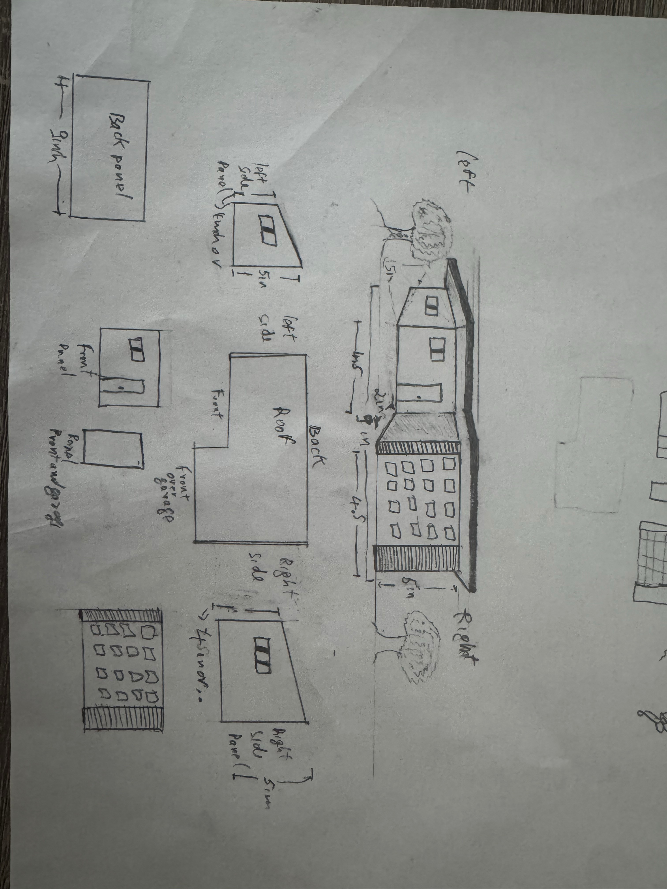

Project Title
Building a Small House Model: A Maker Space Approach to Teaching Project Documentation
Introduction / Project Overview
This project explores how Pierce College’s Maker Space can enhance student learning in CONT260: Construction Project Management by offering hands-on experience through design and fabrication. The core activity involves creating a small-scale wooden house model using the Glowforge laser cutter.
The purpose of this project is to give students a real-world understanding of construction workflows. By moving through the stages of planning, communicating with a design team, making revisions, and executing a build, students engage in a process that mirrors professional project management.
Course / Curriculum Info
CONT260: Construction Project Management at Pierce College. The course focuses on key skills such as construction planning, documentation systems, team coordination, and schedule tracking.
Learning Outcomes
This project supports the following learning outcome from CONT260: “Create documentation procedures and information management systems.”
- Application of digital fabrication tools
- Real-time design adjustments based on technical constraints
- Process documentation and revision tracking
Materials
- Hardware: Glowforge laser cutter (provided by the Maker Space)
- Software: Adobe Illustrator (used by the Maker Space design studio to convert drawings)
- Consumables: Thin plywood sheets for the Glowforge model cut (Maker Space)
All resources were accessible through the Maker Space, with support from both the staff and design studio team.
Process / Procedure
1. Initial Planning
Outlined the project and selected CONT260 as the course connection. Reviewed the syllabus and selected the learning outcome related to documentation. Met with Maker Space staff to discuss feasibility and steps.
2. Hand-Drawn Design Submission
I created a hand-drawn design for a small wooden house model. The initial layout included five walls, a pitched roof, window and door cutouts, and a small garage area. This drawing served as the foundation for the digital file used by the Glowforge.

Students can also use resources like this Glowforge community house design if they're unsure about their own drawing skills.
Student Guidance Note (Maker Space)
Connecting with the Maker Space team may take persistence. Be clear about your project, ask for direct contact info, and follow up consistently. This mimics real-world construction management practices.
3. Design Conversion Session
This session was held at the Maker Studio inside the Pierce College Fort Steilacoom Library. Working with the design studio team, my sketch was converted into a Glowforge-ready SVG file.
- Adjusted measurements for alignment
- Refined garage lines
- Standardized window shapes
- Removed sloped roof for simplicity
- Fit design onto a single cut page
These decisions reflect real construction management adaptations to structural and technical limitations.
Resources
- Purdue OWL Technical Writing Guide: Helped define the genre as technical communication.
- Glowforge Community Simple House Design: Provided reference for design alternatives.
- CONT260 Course Syllabus: Supported curriculum alignment and learning outcome selection.
- Maker Space & Design Studio Staff: Offered technical assistance and collaboration.